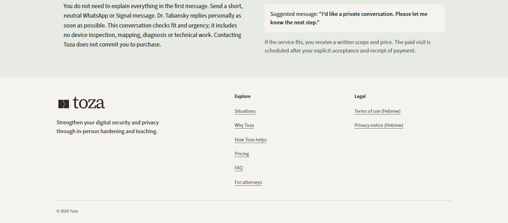
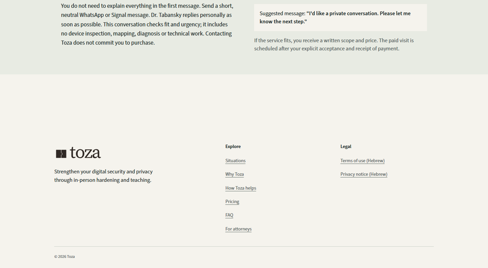
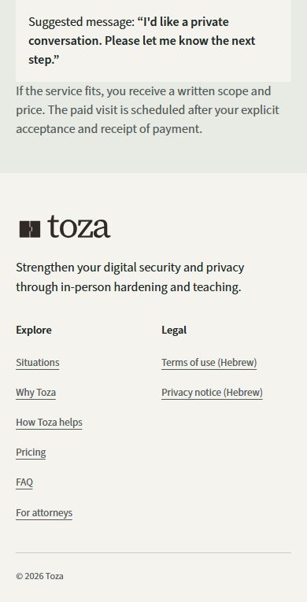
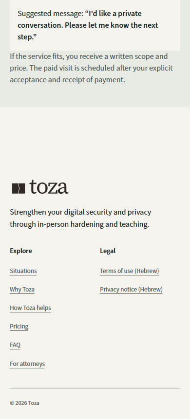

Footer spacing · local preview
The footer starts 160px below the final section on desktop and 96px below on mobile. Wording, footer padding and print spacing stay the same.
Open Home contact and footer · Pricing · Assessment
Desktop · 1440px




Mobile · 390px




Other page endings
Pricing desktop · Pricing mobile · Assessment desktop · Assessment mobile